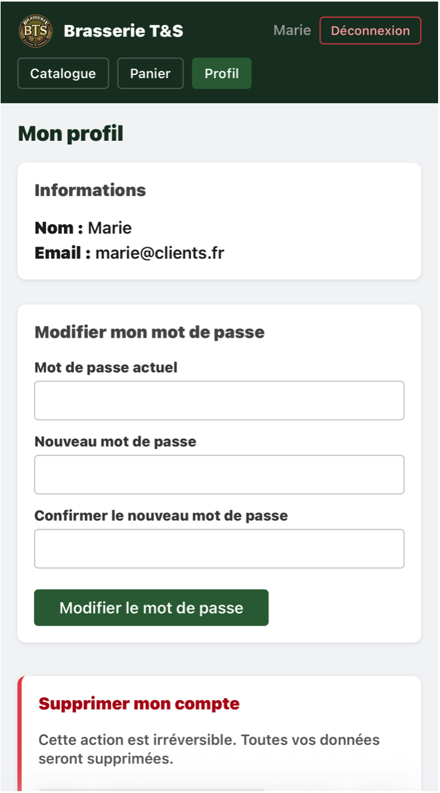
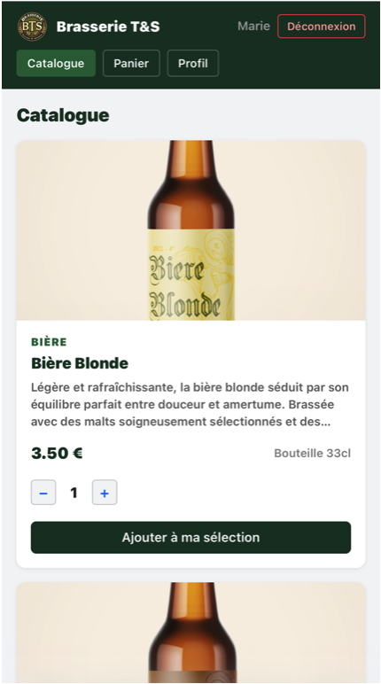
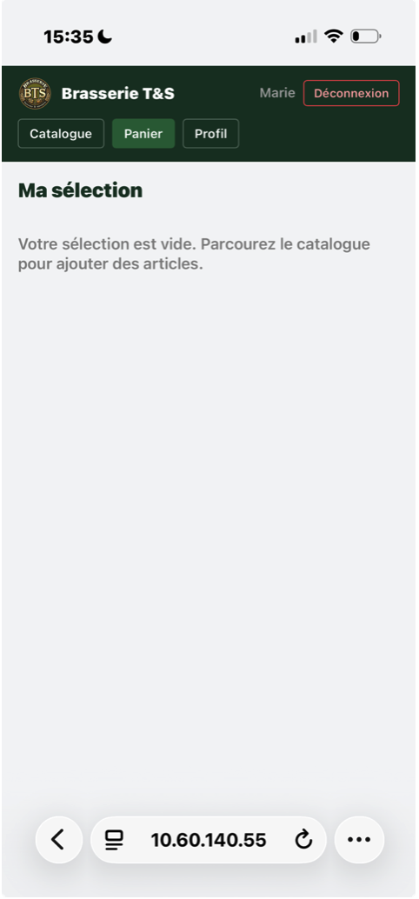

Brasserie — Application web full-stack
Application e-commerce React + Dart/Shelf déployée sur VM Debian 12
📋 Contexte du projet
Dans le cadre de ma deuxième année de BTS SIO SLAM, j'ai développé une application web complète pour une brasserie. L'objectif était de créer un site permettant aux clients de consulter le catalogue de produits (spiritueux), de gérer leur panier et de s'authentifier de manière sécurisée.
Le projet couvre l'ensemble de la stack technique : un front-end en React (JavaScript), un back-end en Dart avec le framework Shelf, une base de données MySQL, le tout déployé sur une VM Debian 12 avec Apache en reverse proxy. L'application est également compatible PWA (iOS).
🎯 Mission et réalisations
- Développement du front-end en React (JavaScript) avec Vite comme bundler
- Développement du back-end en Dart avec le framework Shelf
- Conception de la base de données MySQL avec contraintes ON DELETE CASCADE
- Mise en place de l'authentification via tokens JWT (routes /auth)
- Création du catalogue produits (spiritueux) : photo, nom, type, format
- Développement de l'interface d'administration pour la gestion des utilisateurs
- Déploiement sur VM Debian 12 avec Apache en reverse proxy vers l'API (port 8081)
- Configuration en service systemd pour un démarrage automatique
- Compatibilité PWA pour une utilisation sur iOS
💡 Compétences développées
Gérer le patrimoine informatique
J'ai conçu la base de données MySQL avec des relations entre les tables (produits, utilisateurs, commandes) et des contraintes d'intégrité (ON DELETE CASCADE). Le code source est versionné sur GitHub.
Développer la présence en ligne de l'organisation
L'application offre à la brasserie une vitrine numérique complète : catalogue produits en ligne, gestion du panier client et interface d'administration. La compatibilité PWA étend l'accessibilité sur mobile.
Mettre à disposition un service informatique
J'ai déployé l'application sur une VM Debian 12, configuré Apache comme reverse proxy, et mis en place un service systemd pour garantir la disponibilité permanente de l'API. Le middleware CORS gère les requêtes cross-origin entre le front et le back.
Travailler en mode projet
Le projet a nécessité une organisation rigoureuse entre les différentes couches techniques (front, back, BDD, déploiement). J'ai géré les dépendances entre les tâches et suivi l'avancement jusqu'à la mise en production.
🛠️ Langages et logiciels utilisés
Front-end
Back-end
Base de données & Serveur
Outils
⚠️ Difficultés rencontrées et solutions apportées
Difficulté 1 — Configuration du reverse proxy Apache
Problème : Les requêtes du front-end React vers l'API Dart échouaient à cause du CORS et d'une mauvaise redirection Apache.
Solution : J'ai configuré les règles ProxyPass dans Apache
pour rediriger les routes /api vers le port 8081, et ajouté
le middleware CORS dans Shelf pour autoriser les requêtes cross-origin.
Difficulté 2 — Gestion des tokens JWT
Problème : La validation des tokens JWT côté Dart renvoyait des erreurs 403 sur certaines routes protégées même avec un token valide.
Solution : Après débogage avec Postman, j'ai identifié un problème dans le middleware d'authentification qui ne lisait pas correctement le header Authorization. La correction du parsing du token a résolu le problème.
✅ Résultats et bilan
L'application est pleinement fonctionnelle et déployée : les clients peuvent parcourir le catalogue, ajouter des produits au panier et se connecter via un compte sécurisé. L'administrateur dispose d'une interface dédiée pour gérer les produits et les utilisateurs.
Ce projet m'a permis de maîtriser l'architecture full-stack de bout en bout : du développement de l'interface utilisateur jusqu'au déploiement en production sur un serveur Linux. J'ai également renforcé mes compétences en sécurisation des API (JWT) et en configuration serveur (Apache, systemd).
Évolutions possibles : Intégration d'un système de paiement, ajout de notifications push via la PWA, et mise en place d'un pipeline CI/CD pour automatiser les déploiements.
📸 Aperçu du projet


